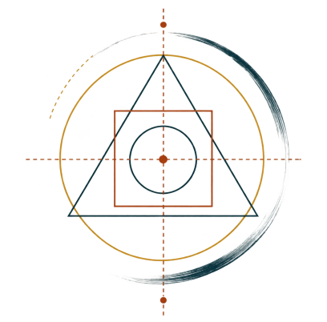

UX Research · Web Redesign
Acumen Academy
Improving the learning experience through research and user-centered design.
UX/UI Designer
With a background in psychology and communication, I combine research, empathy, and visual thinking to design intuitive, human-centered digital experiences.
Explore my work
Featured Projects
UX Research · Web Redesign
Improving the learning experience through research and user-centered design.

UX/UI Design · Visual Identity
Redesigning a nonprofit digital experience with clarity and accessibility in mind.

My background in psychology and communication shapes the way I approach design: with curiosity, empathy, and attention to detail.
I believe meaningful digital experiences begin with understanding people, asking the right questions, and transforming insights into thoughtful solutions.
How I Work
Understanding users, their needs, and the context in which they interact with digital products.
Turning research findings into clear information architectures and user-centered design decisions.
Creating visually coherent interfaces that balance aesthetics, usability, and accessibility.
Considering diverse needs to make digital experiences more inclusive and usable.
Bringing ideas to life through interactive prototypes, testing, and iterative refinement.